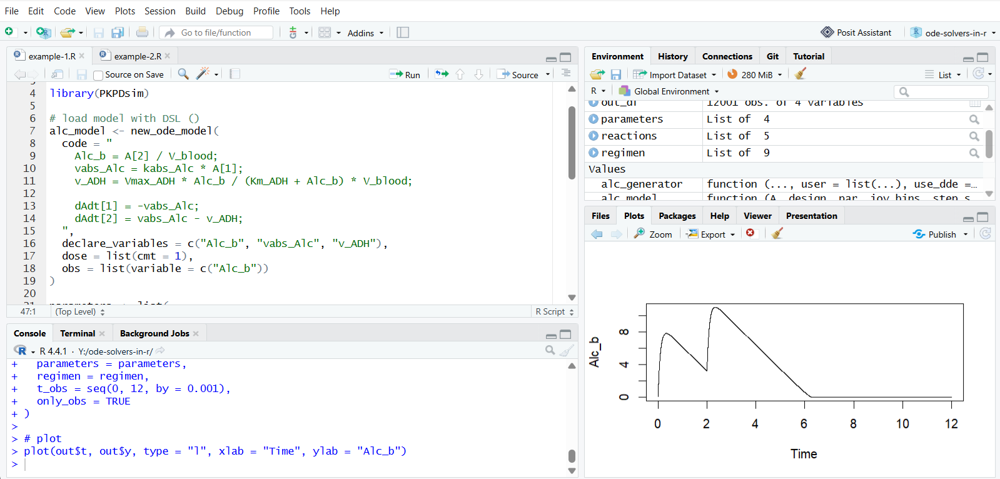
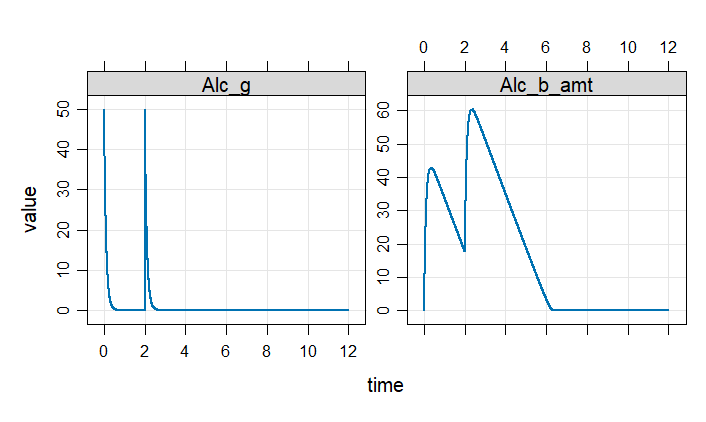
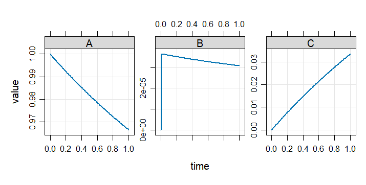

Evgeny Metelkin
2026-04-26

Solving ordinary differential equations (ODEs) is a common task in many fields, including systems biology, pharmacometrics, physics, and engineering. The R ecosystem offers a collection of tools for this purpose: from lightweight numerical solvers to full modeling frameworks.
This article provides a practical overview of ODE solvers in R, with a focus on helping users navigate the ecosystem and choose appropriate tools.
All packages included here were tested with simple examples and the code was published in the GitHub repository.
We include R packages that:
We intentionally exclude:
Some tools included in this review go beyond ODE solving and provide additional capabilities such as parameter estimation or simulation workflows. We include them for completeness, without going into those advanced features.
| Package | Engine | Solver type | Algorithms | Model format | Stiff | DAE | DDE | Time events | Conditional events | Downloads (2025) |
|---|---|---|---|---|---|---|---|---|---|---|
| deSolve | ODEPACK; DASPK (Fortran) | Compiled | lsoda, lsode, lsodes, lsodar, vode, daspk, bdf, adams, euler, rk4, ode23, ode45, | R func (interpreted); C/C++/Fortran (compiled) | Yes (lsoda) | Yes (daspk) | Yes (dede) | Yes | Yes (rootfun) | 635628 |
| rxode2 | LIBLSODA + custom (C) | Compiled | liblsoda, lsoda, dop853, indLin | DSL (R-like, compiled) | Yes | - | - | Yes | - | 42872 |
| mrgsolve | DLSODA (C++ translation) | Compiled | lsoda | DSL (C++-like, compiled) | Yes | - | - | Yes | - | 33544 |
| dMod | deSolve | Compiled | depends on deSolve | DSL (cOde, compiled), API (compiled) | Yes | - | - | - | - | 4947 |
| pracma | Matlab port | Pure R | ode23, ode23s, ode45, ode78 | R func (interpreted) | Yes (ode23s) | - | - | - | - | 1059146 |
| odin | deSolve | Compiled | depends on deSolve | DSL (R-like, compiled) | Yes | - | Yes (dede) | - | - | 17252 |
| PKPDsim | Boost::odeint (C++) | Compiled | Adaptive RK (RKCK54) | DSL (compiled) | - | - | - | Yes | - | 10319 |
| EpiModel | deSolve | Compiled | depends on deSolve | R func (interpreted) | Yes | - | Yes (dede) | - | - | 23088 |
| PBSddesolve | solv95 (C) | Compiled | dde | R func (interpreted) | - | - | Yes | - | - | 10341 |
| sundialr | SUNDIALS (C) | Compiled | BDF, Adams | R func (interpreted); C++ (compiled) | Yes | Yes (via IDA) | - | Yes | - | 2024 |
| r2sundials | SUNDIALS (C) | Compiled | BDF, Adams | R func (interpreted); C++ (compiled) | Yes | Yes (via IDA) | - | - | Yes (via rootfinding) | 3439 |
| rstan | Stan Math Library (C++) | Compiled | rk45, bdf, adams, ckrk | DSL (Stan language, compiled) | Yes (bdf) | Yes (index-1) | - | - | - | 1107167 |
| rodeo | deSolve | Compiled | depends on deSolve | Table format (interpreted/compiled) | Yes | - | - | Yes | Yes (via deSolve roots) | 3386 |
This refers to the underlying numerical implementation used by the package. This can be:
This is the list of available numerical methods as documented by the package.
ODE models can be defined in different ways: as R functions, domain-specific languages (DSL), structured APIs, or even external code.
The key distinction affecting performance is how the model is executed:
Indicates whether the solver can handle stiff systems. Stiffness arises when a system contains processes evolving on very different time scales. Solvers that support stiffness typically use implicit methods or adaptive switching (e.g., LSODA).
Support for these features is solver-dependent and often requires specific algorithms.
These features are important for modeling real-world systems with discontinuities.
Total number of downloads in 2025 from CRAN, reflecting usage statistics. Calculated with CRAN logs.
To ensure practical consistency, packages were tested on two simple ODE models. The full code for all packages is available in the companion GitHub repository.
We are providing here the code in mrgsolve format for two examples: a pharmacokinetic model with non-linear elimination, and the Robertson problem, which is a classic stiff ODE system.
library(mrgsolve)
library(magrittr)
# load model as DLS (C++ like)
mod <- mcode("pk_model", '
$PARAM
kabs_Alc = 10.0
Vmax_ADH = 3
Km_ADH = 0.1
V_blood = 5.5
$CMT
Alc_g Alc_b_amt
$ODE
double Alc_b = Alc_b_amt / V_blood;
double vabs_Alc = kabs_Alc * Alc_g;
double v_ADH = Vmax_ADH * Alc_b / (Km_ADH + Alc_b) * V_blood;
dxdt_Alc_g = -vabs_Alc;
dxdt_Alc_b_amt = vabs_Alc - v_ADH;
$TABLE
capture Alc_b;
')
# time event
ev1 <- ev(time = 2, amt = 50, cmt = "Alc_g")
# solve
out <- mod %>%
init(Alc_g = 50, Alc_b_amt = 0) %>%
ev(ev1) %>%
mrgsim(start = 0, end = 12, delta = 0.001)
plot(out)
library(mrgsolve)
library(magrittr)
# load model as DLS (C++ like)
mod <- mcode("rob_model", '
$CMT
A B C
$ODE
dxdt_A = -0.04 * A + 1e4 * B * C;
dxdt_B = 0.04 * A - 1e4 * B * C - 3e7 * pow(B, 2);
dxdt_C = 3e7 * pow(B, 2);
')
# solve
out <- mod %>%
init(A = 1, B = 0, C = 0) %>%
mrgsim(start = 0, end = 1, delta = 1e-2)
plot(out)
The goal of this review was to provide a maximally complete and objective overview of tools for solving ODEs in R. The packages included in this survey differ significantly in their purpose and functionality: from simple numerical solvers to full-featured frameworks and specialized domain-specific tools.
Many aspects - such as computational performance, numerical accuracy, and advanced functionality - are intentionally not covered in this article.
Many packages designed for specific application areas (e.g., PK/PD) can also be used to solve general ODE systems. These are included here on equal footing, without focusing on their domain-specific features.
For a broader catalogue, see the CRAN Task View: Differential Equations, which also covers SDEs, DDEs, DAEs, PDEs, boundary value problems, calibration tools, and related modeling packages. The present review is narrower and more practical: it focuses on packages that can be used to solve general ODE systems in R and provides tested examples for each included tool.
The table includes popularity metrics as download counts. However, these numbers do not reflect the actual capabilities of the packages. Downloads may include one-time installations for educational purposes, CI/CD workflows, or usage of a package for non-ODE problems. Therefore, they should not be considered a deciding factor when choosing a tool, but rather as a rough indicator of visibility within the community.
deSolve is one of the most widely used and established ODE packages in R. Its central role in the ecosystem is reflected not only in its large user base, but also in the number of other packages that build on top of it.
It provides a broad set of numerical methods and supports a wide range of problem types, including stiff systems, DAEs, DDEs, and event handling. At the same time, it offers flexible model definitions, from simple R functions to compiled code.
Overall, deSolve can be seen as a foundational tool in the R ecosystem for differential equations. Its popularity is well justified by its versatility, stability, and long-term development. If you are new to ODE modeling in R, starting with deSolve is a safe and practical choice before exploring more specialized tools.
An important factor when choosing a tool is the model definition format. The R ecosystem offers a wide range of approaches: from simple R functions (deSolve, pracma, PBSddesolve) and tabular specifications (rodeo) to domain-specific languages (PKPDsim, rstan) and low-level compiled code (rxode2, mrgsolve, deSolve).
These differences affect both performance and usability, and often determine how easily a model can be developed, modified, and integrated into a workflow.
Despite the variety of available tools, support for some important features remains limited across the R ecosystem. In particular, capabilities such as delay differential equations (DDE), differential-algebraic equations (DAE), and advanced event handling are only partially implemented and are available in relatively few packages. As a result, modeling tasks that rely on these capabilities may require additional effort, careful selection of tools, or even custom implementations.
License: CC-BY-4.0